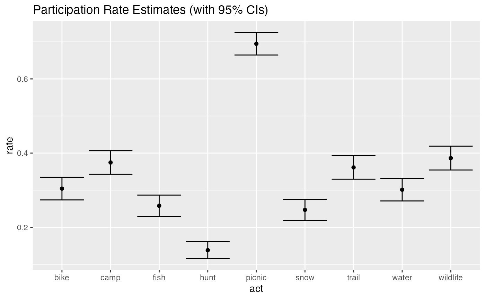
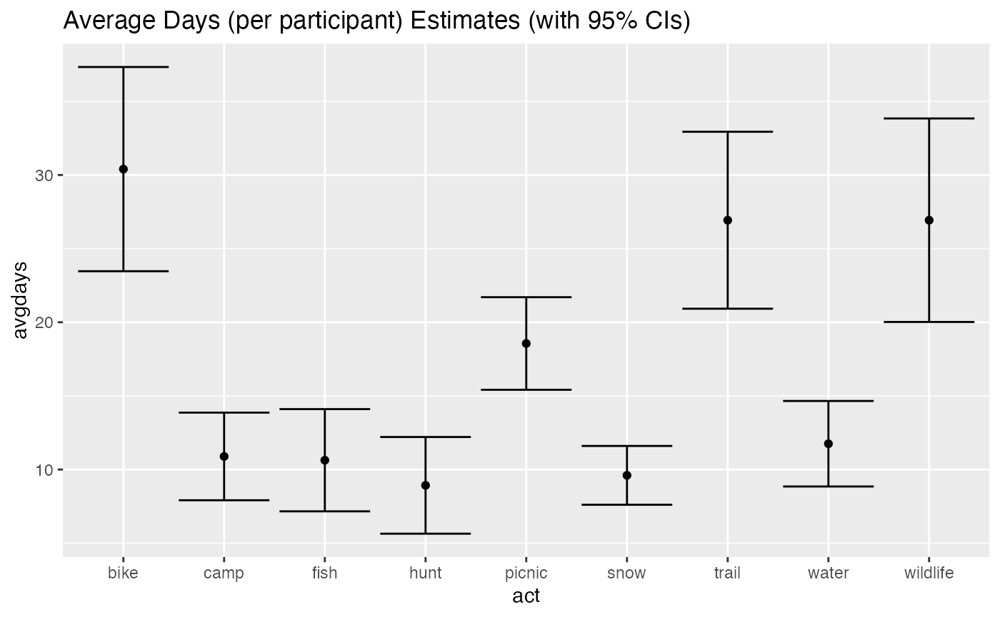

Overview
Package sastats includes a few convenience functions for estimating survey sampling errors. These are simple calculations, and the functions are just thin wrappers for a bit of code. Relevant measures:
- Standard error of the mean:
error_se_mean() - Standard error of a proportion:
error_se_prop() - Margin of error (for confidence intervals):
error_me()
Notes
Package survey provides a much more comprehensive approach to survey-based calculations (errors, weighting, etc.). I’ve tended toward the light-weight approach outlined here, but it could be worth looking into if we are doing alot of survey analysis in R.
Caculating errors for multi-estimate metrics requires error propagation (e.g., total days which depends on participation rate & average days) . I haven’t implemented these computations here, but existing packages address this need. Package propagate is one I’ve used, but have found tricky to implement. Package errors is newer and appears more straightforward (although I haven’t tested it).
Example Data
For demonstration, package sastats includes a survey dataset with annual participation metrics for 9 outdoor recreation activities:
library(dplyr)
library(sastats)
data(svy)
activity <- left_join(svy$act, select(svy$person, Vrid, weight), by = "Vrid")
glimpse(activity)
#> Rows: 11,268
#> Columns: 5
#> $ Vrid <chr> "98", "99", "100", "101", "102", "103", "105", "106", "107", "1…
#> $ act <chr> "trail", "trail", "trail", "trail", "trail", "trail", "trail", …
#> $ part <chr> "Unchecked", "Unchecked", "Unchecked", "Unchecked", "Unchecked"…
#> $ days <dbl> NA, NA, NA, NA, NA, NA, NA, NA, 15, 10, NA, 2, NA, NA, 10, NA, …
#> $ weight <dbl> 0.9596845, 1.0899973, 1.0000000, 0.8747500, 0.9641894, 0.924523…SE Mean
Looking at days of participation:
days <- activity %>%
group_by(act) %>%
summarise(
avgdays = weighted.mean(days, weight, na.rm = TRUE),
se = error_se_mean(days, na.rm = TRUE)
)
days
#> # A tibble: 9 × 3
#> act avgdays se
#> <chr> <dbl> <dbl>
#> 1 bike 30.4 2.97
#> 2 camp 10.9 1.28
#> 3 fish 10.6 1.49
#> 4 hunt 8.93 1.41
#> 5 picnic 18.6 1.35
#> 6 snow 9.60 0.856
#> 7 trail 26.9 2.58
#> 8 water 11.8 1.24
#> 9 wildlife 26.9 2.96SE Proportion
Looking at participation rate:
rate <- activity %>%
group_by(act, part) %>%
summarise(n = n(), wtn = sum(weight)) %>%
mutate(
n = sum(n),
rate = wtn / sum(wtn),
se = error_se_prop(rate, n)
) %>%
filter(part == "Checked")
#> `summarise()` has grouped output by 'act'. You can override using the `.groups`
#> argument.
rate
#> # A tibble: 9 × 6
#> # Groups: act [9]
#> act part n wtn rate se
#> <chr> <chr> <int> <dbl> <dbl> <dbl>
#> 1 bike Checked 1252 381. 0.304 0.0130
#> 2 camp Checked 1252 469. 0.375 0.0137
#> 3 fish Checked 1252 323. 0.258 0.0124
#> 4 hunt Checked 1252 173. 0.138 0.00976
#> 5 picnic Checked 1252 870. 0.695 0.0130
#> 6 snow Checked 1252 309. 0.247 0.0122
#> 7 trail Checked 1252 452. 0.361 0.0136
#> 8 water Checked 1252 377. 0.301 0.0130
#> 9 wildlife Checked 1252 484. 0.386 0.0138Margin of Error
These are useful for reporting confidence intervals. Note that the
dataset weighting produces a “design effect” which inflates the margin
of error. I know the design effect for this dataset, based on the
summary output produced by the sastats::rake_weight()
procedure.
deff <- 1.19
rate <- mutate(rate, me = error_me(se) * deff, lower = rate - me, upper = rate + me)
days <- mutate(days, me = error_me(se) * deff, lower = avgdays - me, upper = avgdays + me)
library(ggplot2)
ggplot(rate, aes(act, rate)) +
geom_point() +
geom_errorbar(aes(ymin = lower, ymax = upper)) +
ggtitle("Participation Rate Estimates (with 95% CIs)")
ggplot(days, aes(act, avgdays)) +
geom_point() +
geom_errorbar(aes(ymin = lower, ymax = upper)) +
ggtitle("Average Days (per participant) Estimates (with 95% CIs)")